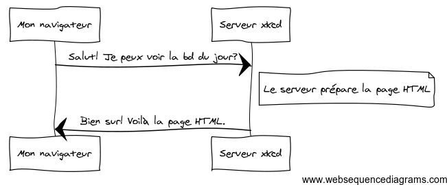
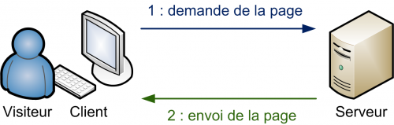

I - Introduction au développement Web
L'objectif de ce chapitre est de découvrir les notions fondamentales liées au
développement Web.
Note : ce chapitre s'inspire de la documentation
du framework PHP Symfony.
A - Le fonctionnement du Web
Pour consulter un site Web sur Internet, il suffit de taper l'adresse correcte du site dans la barre
d'adresse d'un navigateur Web, et le site s'affiche (si l'accès au réseau fonctionne). Nous allons
tenter de comprendre ce qui se cache derrière cette opération très simple en apparence.
1 - La notion de serveur Web
Pour être accessible, un site Web doit être publié sur un serveur. Un serveur est un
type particulier d'ordinateur dont le rôle est d'attendre les demandes de clients, et d'y répondre. Un
serveur rend un service à ses clients.
Il existe de nombreux types de serveurs, en fonction du service rendu : serveur de fichiers, de
messagerie, d'authentification... Un serveur qui permet de publier des sites Web est appelé serveur
Web.
Note
Une même machine peut rendre différents services (exemple : serveur Web et
serveur de fichiers).
Plus précisément, une machine serveur Web embarque et exécute un logiciel serveur, capable de répondre
aux demandes de consultations de sites Web. Les logiciels serveurs Web les plus populaires sont Apache, Microsoft
IIS et nginx.
2 - La notion de client Web
La machine qui permet la consultation du site Web demandé est appelé client Web. Il
s'agit d'un abus de langage : en réalité, le véritable client est un logiciel qui s'exécute sur cette
machine et réalise l'opération de consultation. Ce logiciel est le plus souvent un navigateur Web (browser).
Les navigateurs Web les plus populaires sont Internet
Explorer, Mozilla Firefox, Chrome, Safari
et Opera.
D'autres types de logiciels que les navigateurs peuvent jouer le rôle de clients Web en se connectant à
des serveurs Web. Exemples : robots d'indexation, aspirateurs Web, applications mobiles, etc.
3 - La communication entre client et serveur
La compréhension des échanges ayant lieu entre un client et un serveur Web lors de la consultation d'un
site est essentielle. Il s'agit d'un mécanisme de type requête/réponse.

- L'échange est initié par le client, qui envoie au serveur une requête pour consulter une ressource
Web.
- Le serveur prépare la page HTML associée.
- Le serveur renvoie la page HTML au client, qui l'affiche.
Afin de se comprendre, client et serveur Web utilisent pendant leurs échanges un protocole commun :
HTTP.
B - Le protocole HTTP
HTTP (HyperText Transfert Protocol) est le protocole de transfert du Web. C'est son invention en
1989 au CERN de Genève, en même temps que le langage HTML, qui a conduit à l'apparition du World Wide
Web : un immense réseau de réseaux, où on peut "rebondir" d'une page Web à une autre en
utilisant des liens sans avoir besoin de connaître l'emplacement physique des serveurs et des ressources
consultés.
HTTP est fondamentalement un protocole très simple, basé sur des commandes textuelles.
4 - Anatomie d'une requête HTTP
Prenons comme exemple la première étape de l'échange décrit plus haut.
La requête HTTP envoyée par le navigateur prend une forme similaire à celle-ci :
GET / HTTP/1.1
Host: xkcd.com
Accept: text/html
User-Agent: Mozilla/5.0 (Macintosh)
La première ligne de cette requête HTTP est la plus importante. Elle contient :
- La méthode associée à la requête : ici,
GET signifie une demande de
ressource.
- L'identifiant de la ressource concernée. Ici,
/ (symbole de la racine,
comme sous Linux) indique qu'on souhaite accéder au document par défaut.
- La version du protocole HTTP, ici 1.1.
Les autres lignes de la requête HTTP sont appelés champs d'en-tête (HTTP header fields ou plus
simplement headers). Ils précisent le site Web concerné (champ Host), les types de
contenu acceptés par le client (champ Accept) et le logiciel client utilisé (champ User-Agent).
Il existe d'autres champs d'en-tête, non présentés ici.
Les méthodes HTTP les plus fréquemment utilisées sont GET (pour
récupérer une ressource depuis le serveur) et POST (pour modifier
une ressource sur le serveur). Il en existe d'autres comme HEAD, PUT ou DELETE.
5 - Anatomie d'une réponse HTTP
Lorsqu'il reçoit une requête HTTP, le serveur Web y puise les informations nécessaires pour construire la
réponse, puis la renvoie au client. Continuons avec notre exemple précédent.
La réponse HTTP renvoyée du serveur au client prend l'aspect ci-dessous.
HTTP/1.1 200 OK
Date: Mon, 14 Apr 2013 14:05:05 GMT
Server: lighttpd/1.4.19
Content-Type: text/html
<html>
<!-- code HTML de la page -->
<!-- ... -->
</html>La première ligne de la réponse contient son statut sous la forme d'un code qui indique
le résultat de la requête. Comme une requête, une réponse HTTP contient des champs d'en-tête
(Date, Content-Type et bien d'autres) permettant de véhiculer des informations
additionnelles. Par exemple, il est possible d'utiliser certains champs pour mettre en place un
mécanisme de cache.
Enfin, la réponse HTTP contient éventuellement la ressource demandée par le client. Le plus souvent, il
s'agit d'une page Web décrite sous la forme de balises HTML.
6 - Les codes HTTP
Les codes de retour HTTP peuvent être classés par familles en fonction du premier chiffre.
| Famille |
Signification |
Exemples |
| 1xx |
Information |
|
| 2xx |
Succès |
200 : requête traitée avec succès |
| 3xx |
Redirection |
|
| 4xx |
Erreur provenant du client |
400 : syntaxe de la requête erronée
404 : ressource demandée non trouvée |
| 5xx |
Erreur provenant du serveur |
500 : erreur interne du serveur
503 : service temporairement indisponible |
Vous trouverez sur Wikipedia plus de détails sur le protocole HTTP.
C - L'évolution vers des sites dynamiques
7 - Au commencement du Web : les sites statiques
Les tous premiers sites Web créés dans les années 1990 étaient composés uniquement de pages HTML (pour le contenu) et de fichiers CSS (pour la mise en forme du contenu), et éventuellement d'autres types de ressources comme par exemple des images.
La consultation d'un site Web statique met en jeu deux logiciels :
- Le logiciel client, le plus souvent un navigateur Web.
- Le logiciel serveur Web.
Lorsqu'un client envoie une requête au serveur Web hébergeant un site statique, le serveur se contente de renvoyer la ressource demandée. Les pages HTML affichées ne peuvent pas évoluer automatiquement, d'où le terme "statique".

L'accès à un site Web statique est un exemple d'architecture client/serveur,
La mise à jour d'un site Web statique nécessite l'édition des fichiers sources, puis la mise en ligne des modifications (publication sur le serveur Web).
8 - L'évolution vers des sites dynamiques
L'explosion de la popularité du Web au début des années 2000 a provoqué l'apparition de nouveaux besoins et conduit à l'émergence des sites Web dynamiques. A l'inverse d'un site statique, un site dynamique est un type de site Web dans lequel le contenu des pages est construit au moment de la requête du client.
Lorsqu'un client envoie une requête au serveur Web hébergeant un site dynamique, le serveur prépare la page HTML correspondant à cette requête, puis la renvoie au client pour affichage. Les pages Web affichées au visiteur ne sont pas figées comme dans le cas d'un site statique, mais générées au moment de leur consultation.

Important
Le résultat renvoyé par le serveur Web et affiché par le client est toujours une page HTML.
Contrairement à un site statique, un site dynamique ouvre la voie à des interactions quasiment illimitées avec ses visiteurs : identification, échange de données entre site et utilisateur, mise à jour du site par ses utilisateurs ("Web 2.0")... Parmi les nombreux exemples de sites Web dynamiques, on peut citer les sites de e-commerce, CMS (Content Management System ou systèmes de gestion de contenu) , wikis, forums...
9 - Les langages serveur du Web dynamique
Pour créer un site Web dynamique. il faut obligatoirement utiliser un langage capable de générer des pages HTML. Le diagramme ci-dessous rassemble les principaux langages capables de réaliser cette tâche.

On constate que la technologie la plus populaire est PHP, suivie de loin par ASP.NET (Microsoft) et Java (ORACLE). Les technologies ASP.NET et Java sont plus souvent employées pour des sites complexes avec d'importants besoins en matière de performances et de montée en charge. Ces sites sont assez peu nombreux, d'où la domination globale de PHP.
Note
Cela ne veut pas dire que le langage PHP ne puisse pas, lui aussi, être employé dans des contextes exigeants.
PHP est particulièrement dominant dans le secteur des CMS, ces logiciels qui permettent de publier du contenu en ligne sans presque aucune connaissance technique. On peut citer comme exemples Wordpress, Drupal ou Joomla. La position dominante de PHP s'explique également par la richesse de son écosystème : librairies, frameworks, etc.
Quelle que soit la technologie mise en oeuvre, il est essentiel de bien comprendre que ces langages sont toujours employés côté serveur Web et jamais côté client (d'où le terme de langages "serveur"). Un navigateur Web ne sait pas exploiter directement une page PHP ou ASP.NET. En revanche, il sait afficher une page HTML qu'un serveur Web aura préalablement générée en utilisant PHP ou ASP.NET.